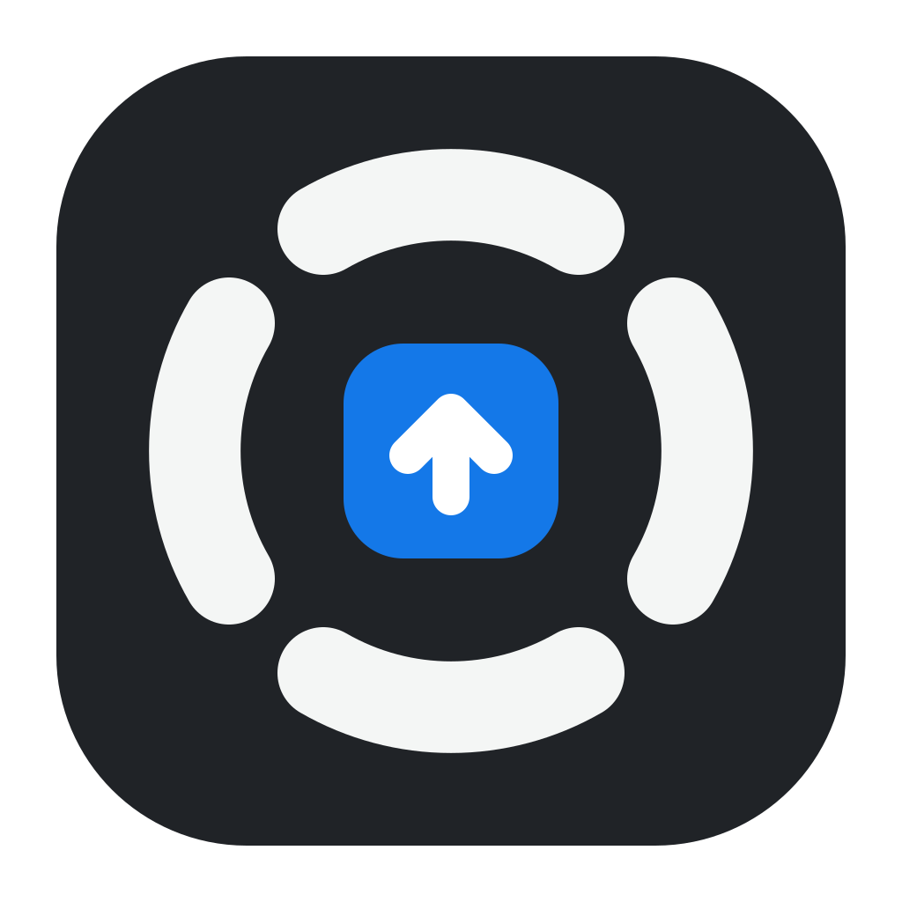
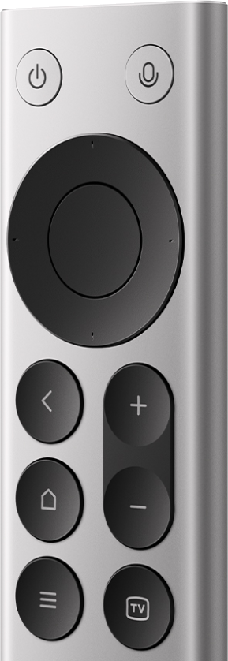

01 / 按键映射
你的按键，你来定义。
单击、双击、长按，分别设置专属行为。
从常用快捷键到媒体控制，按你的习惯来。

axonkey® 下载 Axonkey一只遥控器，更多可能。
用 Axonkey，把小米蓝牙遥控器2Pro 变成你的
快捷键控制器与随手可用的麦克风。

小小遥控器。刚刚好的控制力。
把重复的操作交给按键，
把注意力留给正在做的事。
单击、双击、长按，分别设置专属行为。
从常用快捷键到媒体控制，按你的习惯来。
将遥控器变成电脑麦克风。安装虚拟音频驱动后，在语音应用中选择对应输入即可使用。
把文本、等待与按键串成一个动作。
修改自动保存，下次按下即刻生效。
选一个按键，设一种行为。
设备状态、按键映射、语音通道，
都在一个清晰的本地控制台里。
无需账号，没有云端同步或遥测。配置与诊断数据保存在本机。